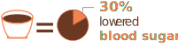

TEAS
&
BENEFITS
Tea is the second most consumed drink after water.
There are different favoured varieties of tea.
The most commonly drank teas are black, green, white and oolong.

BLACK TEA
ANTIOXIDANTS
PROPERTIES IN BLACK TEA
Improve your health & reduce the high chance of chronic disease.
CONTROLS BLOOD SUGAR
High blood sugar is associated with disorders such as diabetes, obesity and multiple heart conditions.
BLACK TEA is a good sugar free drink found to increase the body's use of insulin.
GUT HEALTH
BLACK TEA can reduce BAD bacteria in gut & improve GOOD bacteria.
Gut contains more than billions of bacteria and up to 75% of the immune system.
GREEN TEA
IMPROVE BRAIN FUNCTION
GREEN TEA will give a much delicate kind of buzz than coffee thanks to L-theanine and the small dose of caffeine.
PREVENT CARDIOVASCULAR DISEASE
GREEN TEA drinkers have a lower risk of cardiovascular disease, according to reports
“People who drink GREEN TEA have up to a 31% lower risk of dying from a cardiovascular disease”
ALZHEIMER & PARKINSON
Drinking GREEN TEA can be protective effect of the brain, and il also protect as a person age.
WHITE TEA
PROMOTES WEIGHT LOSS
WHITE TEA can be powerful when it comes to lose weight. Helps improve metabolism by 5% = to burning 100 calories per day
PROTECT AGAINST OSTEOPOROSIS
WHITE TEA will reduce the risk of osteoporosis. Osteoporosis is a disorder that causes the bones to become hollow and porous.
FIGHT CANCER
The researchers found that WHITE TEA extract block the growth and spread of colon cancer cells. Antioxidants in white tea extract also protect normal cells against harmful molecule damage.
COMBAT SKIN AGING
WHITE TEA and its compounds may protect the skin from damage linked to aging. This includes external damage from the sun’s UV rays and internal damage from cellular components that may harm the skin’s fiber network.
ANTIOXIDANTS
WHITE TEA is filled with polyphenols that have antioxidant properties. Antioxidants help minimize chronic inflammation by defending the body from free radicals. Polyphenols can help to relax blood vessels and increase immunity.
PROTECT TEETH
WHITE TEA contains fluoride, catechins and tannins that prevents plaque on teeth.
OOLONG TEA
PREVENT CANCER RISK
Drinking OOLONG TEA daily may lower the chance of ovarian cancer, melanoma, oral cancer, and lung cancer.
HEALTHY BELLY
The polyphenols found in the OOLONG TEA promote intestinal health by regulating its flora and generating fatty acids.
RECOVER HEALTH & BEAUTY OF HAIR
OOLONG TEA antioxidants can help battle hair loss, dry hair, dandruff and itchy scalp. Specialists assume that antioxidants combat DHT dysfunction or dihydrotestosterone synthesis.
STABILIZE BLOOD SUGAR
The polyphenols in OOLONG TEA are known to regulate the levels of blood sugar.
KEEP SKIN HEALTHY & YOUNG LOOKING
The free radicals destroying DNA can harm the cell membranes as well. Dull, saggy, and dry skin can look due to the loss of moisture if skin cell membranes are damaged. OOLONG TEA will rejuvenate the skin cells and postpone bioaging.
REFERENCE
https://www.healthline.com/nutrition/black-tea-benefits#TOC_TITLE_HDR_3
https://www.healthline.com/nutrition/top-10-evidence-based-health-benefits-of-green-tea
https://www.healthline.com/nutrition/white-tea-benefits
https://www.conserve-energy-future.com/oolong-tea-benefits.php